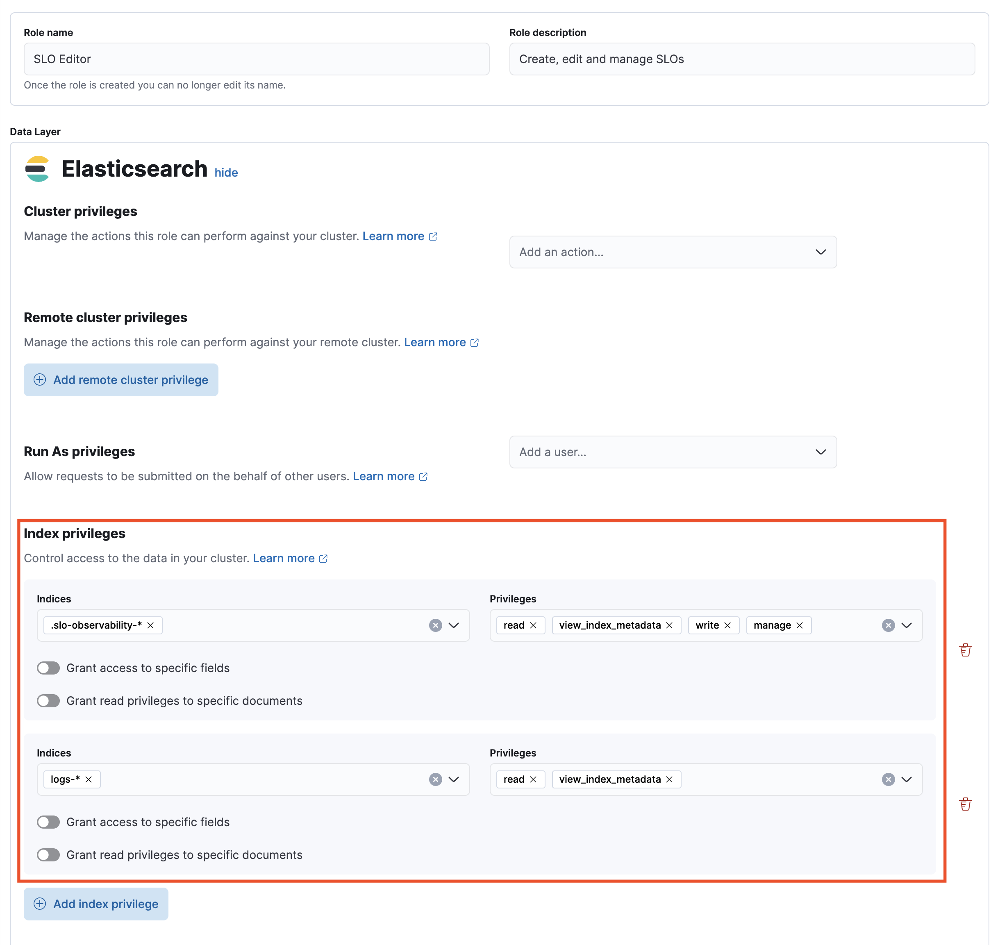
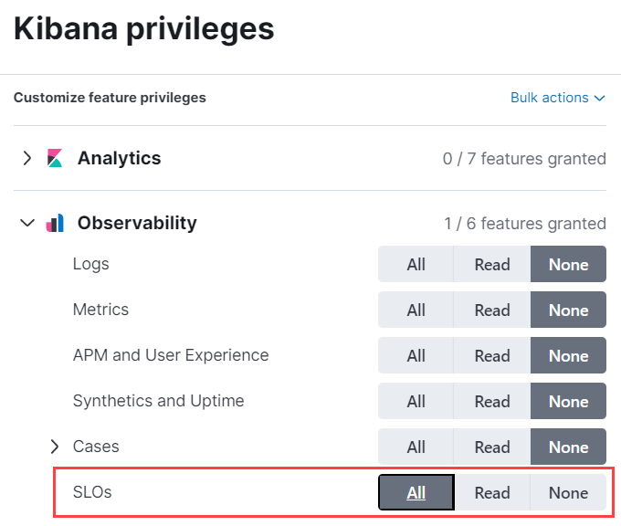
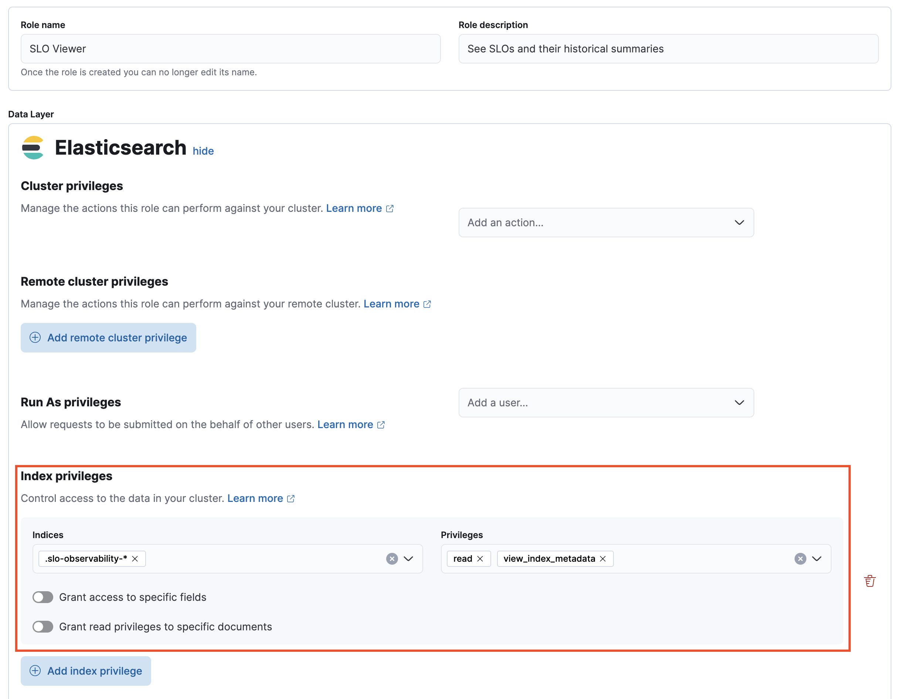
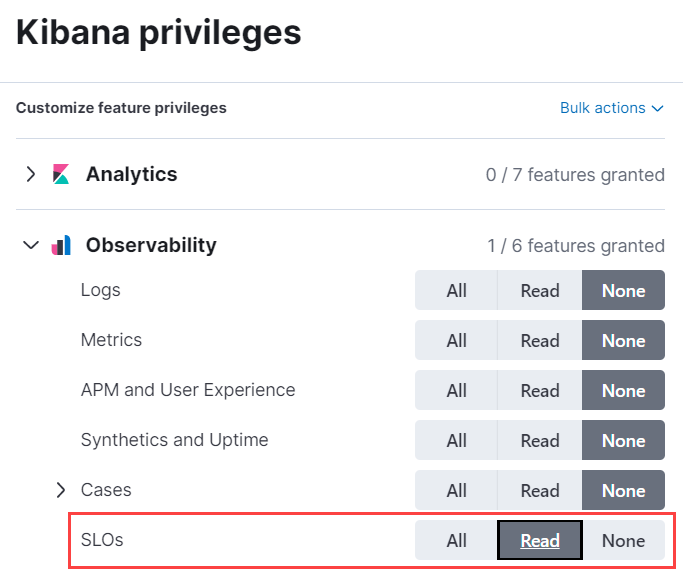

Configure service-level objective (SLO) access
editTo create and manage SLOs, you need an appropriate license.
You can enable access to SLOs in two different ways:
-
Creating the following roles, depending on the type of access needed:
- SLO Editor — Create, edit, and manage SLOs and their historical summaries.
- SLO Viewer — Check SLOs and their historical summaries.
-
Using the
editorbuilt-in role. This role grants full access to all features in Kibana (including the Observability solution) and read-only access to data indices. Users assigned to this role can create, edit, and manage SLOs.The
editorbuilt-in role grants write access to all Kibana apps. If you want to limit access to the SLOs only, you have to manually create and assign the mentioned roles.
To create a role:
- From the left navigation in Kibana, under Management select Stack Management.
- Under Security, select Roles.
- Click Create role in the upper-right corner of the page.
Create an SLO Editor role
editSet the following privileges for the SLO Editor role:
-
Under Index privileges in the Elasticsearch section, add
.slo-observability-*to the Indices field andread,view_index_metadata,write, andmanageto the Privileges field. - Click Add index privilege.
-
In the Indices field, add the indices for which you plan to create SLOs. Then, add
readandview_index_metadatato the Privileges field. The following example showslogs-*, but you can specify any indices. - In the Kibana section, click Add Kibana privilege.
- From the Spaces dropdown, either select any specific spaces you want the role to apply to, or select All Spaces.
-
Set Observability → SLOs to
All. - Click Create Role at the bottom of the page and assign the role to the relevant users.
Create an SLO Viewer role
editSet the following privileges for the SLO Read role:
-
Under Index privileges in the Elasticsearch section, add
.slo-observability-*to the Indices field andreadandview_index_metadatato the Privileges field. - In the Kibana section, click Add Kibana privilege.
- From the Spaces dropdown, either select any specific spaces you want the role to apply to, or select All Spaces.
-
Set Observability → SLOs to
Read. - Click Create Role at the bottom of the page and assign the role to the relevant users.